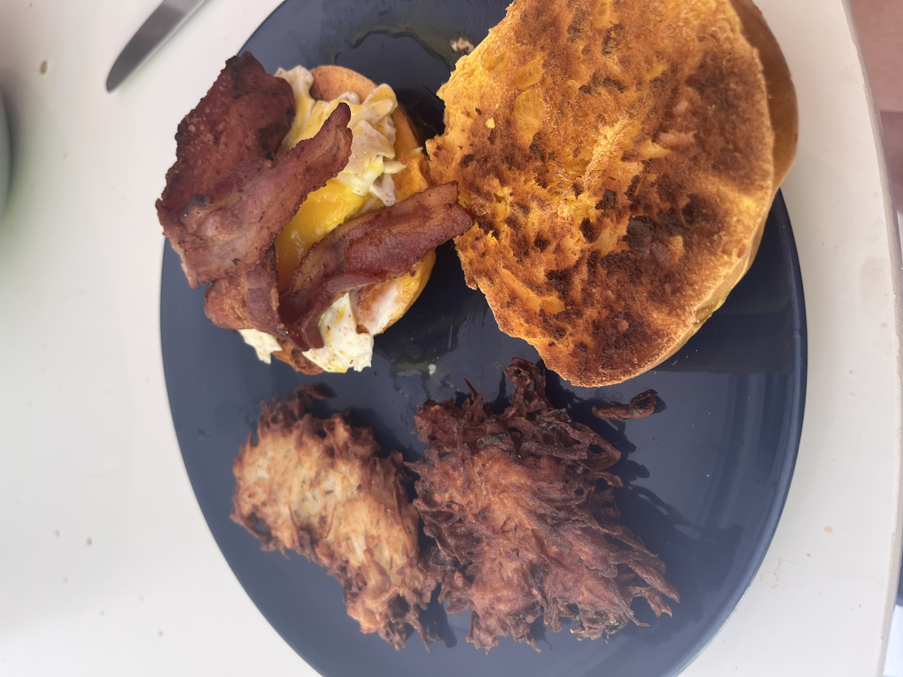

This is my favorite thing to eat for breakfast!

Description
An egg bagel toasted with a fried egg and two strips of bacon.
With a side of latkes.
Ingredients:
- 2 strips of bacon
- 2 eggs
- 1 egg bagel
- 1 tbsp butter
- 1 russet potato
- 1/4 cup of flour
- 1 cup of oil for frying
- salt and pepper or any seasonings you want to taste
Instructions
- first shred up your potato before rinsing to get rid of excess starch
- start frying bacon in a pan
- mix potato with onions, flour and egg
- put bagel in toaster
- form into patties and fry in oil, flipping when the bottom is golden brown
- once bacon is finished, dry on paper towel and cook your egg in its fat plus butter
- drain latkes on paper towel when, then season with salt and pepper
- assemble components and serve
Return to main page